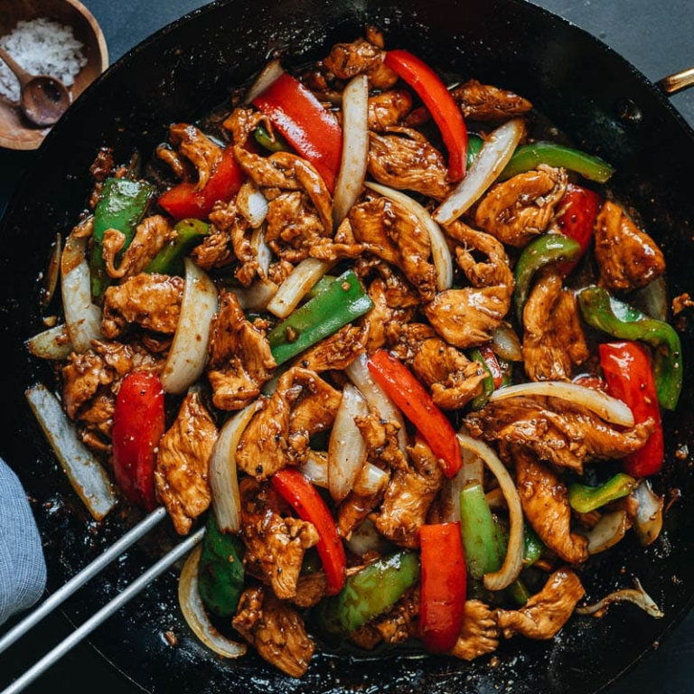

Black Pepper Chicken
Home

Description
Black pepper chicken is a savory dish that consists of tender chicken pieces marinated in a flavorful blend of spices and stir-fried with black pepper sauce. The dish usually includes other ingredients such as onions, bell peppers, garlic, and soy sauce for added taste and texture.
Ingredients
- 450g Chicken Breasts, sliced into thin pieces
Marinade
- 1 tablespoon Light Soy Sauce
- 1 tablespoon Shaoxing Wine
- 1 tablespoon Cornflour
Sauce
- 1/2 cup Chicken Broth
- 2 tablespoon Light Soy Sauce
- 2 tablespoon Shaoxing Wine
- 2 tablespoon Dark Soy Sauce
- 1 tablespoon Cornflour
- 1 1/2 tablespoon Sugar
- 2 tablespoons coarsley ground Black Pepper
- 1/8 teasponn Salt
Stir Fry
- 2 tablespoons sunflower oil
- 1 tablespoon minced Ginger
- 2 cloves of minced Garlic
- 1/2 chopped white Onion
- 2 chopped Bell Peppers
Steps
- Combine chicken, soy sauce, Shaoxing wine, and cornstarch in a medium-sized bowl. Gently mix by hand until the chicken is coated with a thin layer of the mixture. Marinate for 10 to 15 minutes.
- Combine all the sauce ingredients in a small bowl. Mix well and set aside.
- Heat 1 tablespoon of oil in a large skillet over medium-high heat until hot. Add the chicken. Immediately spread the chicken into a single layer using a spatula, with as little overlap as possible. Sear for 30 seconds or so, until the bottom is lightly browned. Flip the chicken. Cook for 15 to 20 seconds. Stir occasionally, until both sides are browned but still a bit pink inside. Transfer the chicken to a plate and set aside.
- Add the remaining 1 tablespoon of oil to the skillet. Add the ginger and garlic. Give it a quick stir until fragrant. Add the white onion and peppers. Stir and cook for 20 seconds.
- Stir the sauce mixture until the cornstarch is dissolved completely, and pour it into the skillet. Stir with a spatula immediately and cook until the sauce thickens enough to coat the back of a spoon, a few seconds. Add back the cooked chicken. Quickly stir a few times to coat everything with the sauce. Turn off heat and remove the skillet from the stove. Immediately transfer everything to a big plate so the ingredients won’t keep cooking in the hot skillet.
- Serve hot as a main dish.